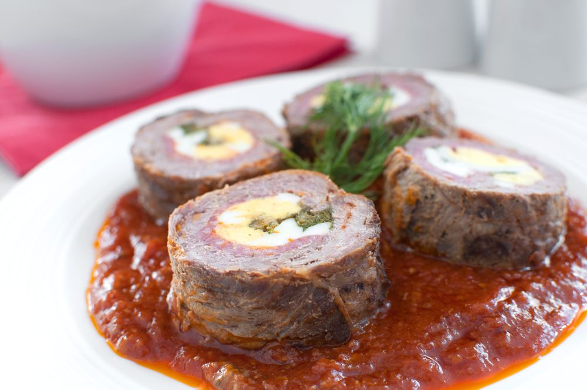

GUD0TOSTOSO

Clique na imagem para ver detalhes sobre os ingredientes da receita
Modo de preparo
- Em um recipiente, tempere a carne com o alho, a cebola, o queijo ralado, os ovos levemente batidos e temperos a gosto (sal, orégano, salsinha e pimenta).
- Misture a cada ingrediente adicionado.
- Acrescente a farinha e mexa com as mãos.
- Abra a carne temperada sobre um pedaço de papel alumínio, untado com óleo.
- Coloque as fatias de presunto e mussarela, a cenoura, os ovos, as azeitonas, orégano, cebola e pimenta (opcional).
- Enrole a carne e coloque-a em uma assadeira retangular.
- Leve ao forno a 180ºC (médio) por 25 minutos.
Informações adicionais
Dica: se desejar, regue com molho de tomate antes de levar ao forno.